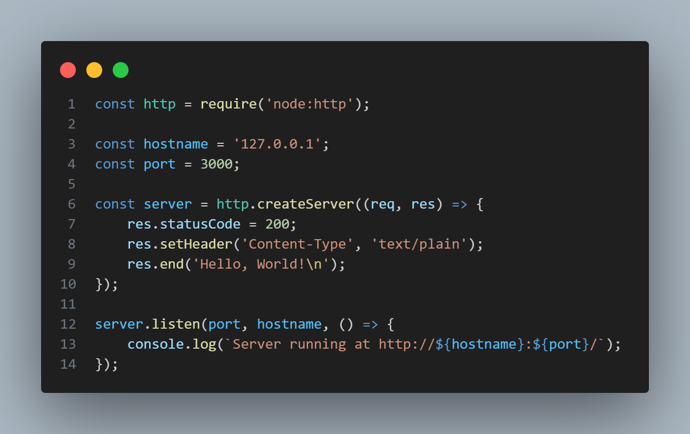

Node js
Es entorno de ejecución de código abierto que permite ejecutar código JavaScript fuera del navegador web. Es decir que podemos construir el "backend" como el servidor, las bases de datos y la lógica de la aplicación
Ejemplo

Este código utiliza el módulo nativo http de Node.js para crear un servidor web básico en tu máquina local (127.0.0.1) que escucha peticiones en el puerto 3000. Su funcionamiento consiste en quedarse activo esperando conexiones y, cada vez que recibe una solicitud del navegador, responde automáticamente enviando un código de éxito 200, configurando la cabecera para texto plano y devolviendo el mensaje "Hello, World!" antes de cerrar la comunicación.
Node.js no es un lenguaje de programación. Es más bien, es un entorno de ejecución que se utiliza para ejecutar JavaScript fuera del navegador y resulta ser que este mismo es un framework de backend
Arquitectura de Nodejs

El comando npm
Node Package Manager (npm) es el gestor de paquetes oficial de Node.js y el registro de software más grande del ecosistema JavaScript, cuando construimos proyectos, usamos varias herramientas para hacer el desarrollo más fácil y rápido. La mayoría de las veces, estas herramientas son creadas por otros desarrolladores y se hacen públicas para su uso gratuito.

Imagina crear tu propio framework CSS; eso llevaría mucho tiempo. Así que los desarrolladores crean estos proyectos y los ponen en el registro de npm para que podamos utilizarlos fácilmente y facilitar el proceso de desarrollo. Un ejemplo de un paquete npm de este tipo es Tailwind CSS, un framework CSS de utilidad para construir páginas web. Otros paquetes npm populares son React, Chalk, Gulp, Bootstrap, Express y Vue.js, entre muchos otros.
¿Que es Express?

Express es el framework web más popular para Node.js. Funciona como una capa de herramientas que simplifica la creación de servidores y el manejo de peticiones HTTP, permitiendo construir APIs y aplicaciones web de forma rápida y estructurada, sin tener que escribir todo desde cero
¿Que se puede realziar con este framework y como se usa?
Express.js es sencillo ya que está diseñado para requerir muy pocas líneas de código para poner a andar un servidor. Se puede decir que el proceso se resume en 4 pasos:
- Su instalación por medio de "npm install express"
- Su codigo basico: Creamos un archivo .js y escribimos su estructurea esencial.

- Ejecucion: Corres tu archivo desde la terminal usando Node: node app.js
- Al abrir http://localhost:3000 en tu navegador, verás el mensaje en la pantalla.
¿Que es el Package.json?
El archivo package.json es el corazón de cualquier proyecto en el ecosistema de Node.js y JavaScript. Si tu proyecto fuera un electrodoméstico que acabas de comprar, el package.json sería una combinación entre el manual, la lista de componentes y el centro de control. Es un archivo de texto escrito en formato JSON que se genera automáticamente en la raíz del proyecto cuando ejecutas el comando npm init.
¿Para que sirve?
- La cédula de identidad del proyecto
Guarda la información básica para que otros desarrolladores (o plataformas de despliegue como Heroku o Vercel) sepan de qué trata el proyecto:
- Nombre del proyecto.
- Versión actual.
- Descripción.
- La lista de compras (Dependencias)
Esta es su función más crucial. En lugar de arrastrar gigabytes de librerías y frameworks ajenos (como Express, React o Mongoose) cuando compartes tu código por GitHub, el package.json solo anota los nombres y las versiones exactas de lo que tu código necesita para funcionar.
- dependencies: Librerías que tu app necesita para correr en producción (ej. express).
- devDependencies: Herramientas que solo usas mientras estás programando, pero que no se necesitan en el servidor final (ej. un linter para revisar errores o herramientas de prueba).
-
Control de mandos (Scripts)
Permite crear "atajos" o comandos personalizados para tareas repetitivas. En lugar de escribir una línea de código larguísima en la terminal para arrancar tu servidor o compilar tus archivos, puedes resumirlo en algo corto.